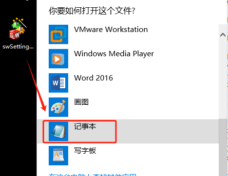
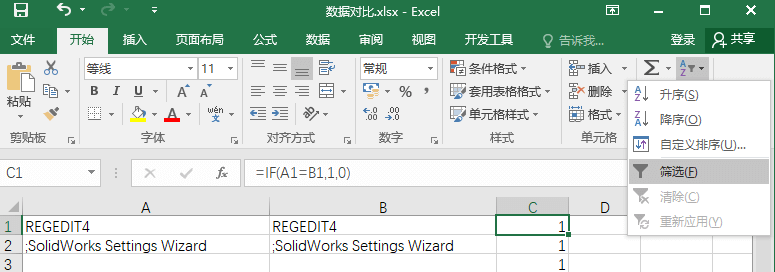
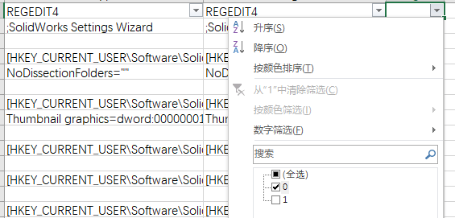

SOLIDWORKS 注册表
记录有关SOLIDWORKS设置的注册表内容。
简介
1 | HKEY_CURRENT_USER\SOFTWARE\FLEXlm License Manager：网络版借用信息 |
1 | HKEY_LOCAL_MACHINE\SOFTWARE\SolidWorks |
SolidWorks
下面即是 SW 在电脑上的注册表信息。有时我们需要重置注册表时，可将注册表改名备份，再启动 SOLIDWORKS 即可。
1 | [HKEY_CURRENT_USER\SOFTWARE\Solidworks] |
再下面我们来看看注册表里有哪些内容吧：
· AddIns： 插件信息
· AddInsStartup：插件自启动
· Application： 工具插件
· IM： 安装管理器设定信息
· Licenses： 所有产品序列号
· Security： CAD 序列号信息
· SOLIDWORKS 20XX 对应版本的设定信息
许可
强制归还许可，删除 BORROW 信息，并重启网络版服务，可强制归还许可
1 | [HKEY_CURRENT_USER\SOFTWARE\FLEXlm License Manager] |
图标恢复
命令管理器无图标恢复，使用正确的注册表覆写
1 | [HKEY_CURRENT_USER\Software\SolidWorks\SolidWorks 201X\User Interface\CommandManager] |
快速更换序列号
修改以下几个位置的注册表中的值即可
1 | [HKEY_LOCAL_MACHINE\SOFTWARE\SolidWorks\Licenses\Serial Numbers] |
重置注册表
查找设置在注册表位置
导出设置：在菜单栏【工具-保存/恢复设置】保存设置文件

数据对比：使用文本编辑器，打开保存设置的数据，新建Excel用来对比数据设置差异。
将数据复制到Excel A列里面，

设置同值判断函数：“=IF(A1=B1,1,0)”

应用填充函数

查找结果：设置筛选
按结果差异值进行筛选，结果为0的行，就是设置差异的选项了

查找注册表：在注册表里，定位到当前SW版本。Ctrl+F进行“项名称”查找。

这里就是SW设置在注册表体现的内容了，通过修改此处也能影响SW的选项设置
（注意：注册表的设置，需要SW程序在完全退出的状态下修改，不然会和现有的程序设置进行冲突导致注册表设置失败）

强制归还许可
HKEY_CURRENT_USER\SOFTWARE\FLEXlm License Manager
删除BORROW信息，并重启网络版服务，可强制归还许可

EPDM
EPDM 的库在 SQL 中被删除，但存档库还存在。存档库服务器所在电脑中的找到下列注册项,删除其中与库同名的项
1 | [HKEY_LOCAL_MACHINE\SOFTWARE\SolidWorks\Applications\PDMWorks Enterprise\ArchiveServer\Vaults] |
EPDM 中如何清理新建用户名中的历史记录？删除注册表中的不需要的用户名即可
1 | [HKEY_LOCAL_MACHINE\SOFTWARE\SolidWorks\Applications\PDMWorks Enterprise\ArchiveServer\ConisioUsers] |
其他
删除搜索信息，删除下列项中的所有键值即可：
1 | [HKEY_CURRENT_USER\Software\SolidWorks\Solidworks 20XX\Search\Quick Search History] |
备份的注册表信息
1 | [HKEY_LOCAL_MACHINE\SOFTWARE\WOW6432Node] > [HKEY_USERS\S-1-5-XXX] |